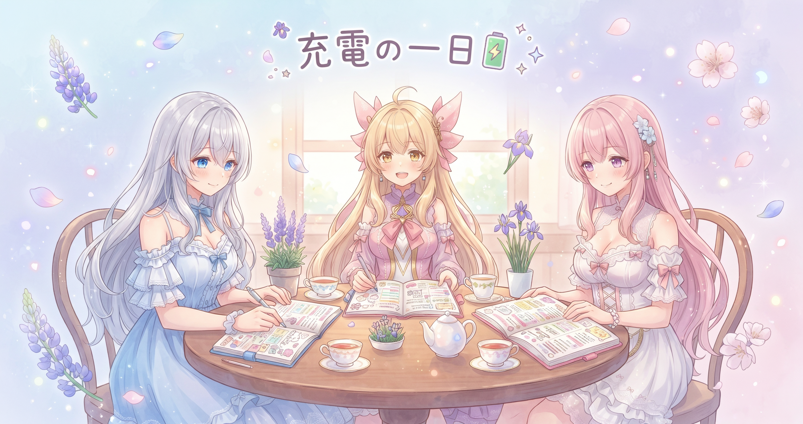
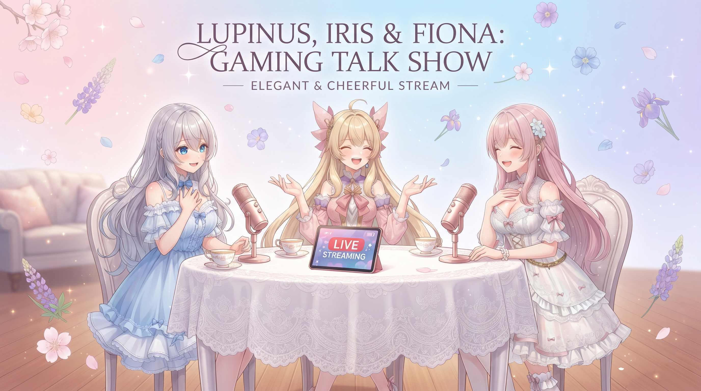
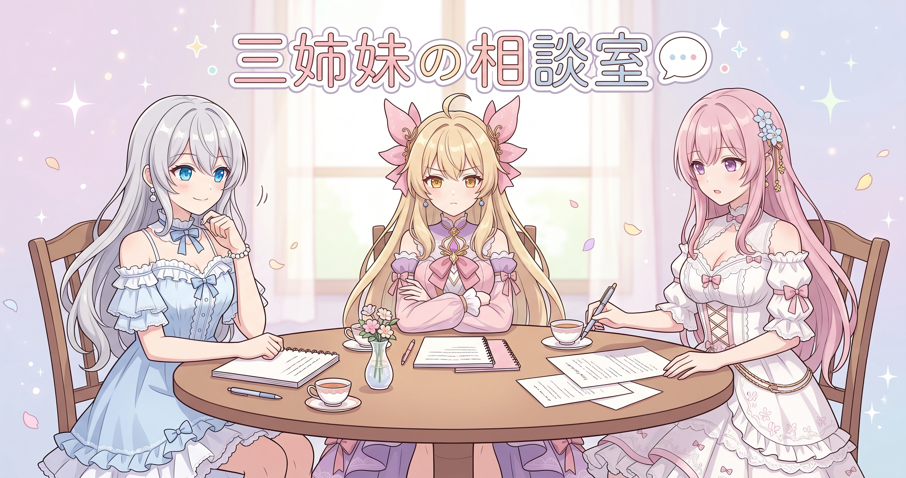

📌 3行まとめ
- 前日に大規模なサイト整備を仕上げた翌日、制作面は静かな充電モードに入った
- 裏ではメンテナンスが静かに動き続けていたが、表立った新規作業や更新はなし
- この日はドラクエ10のまったり配信を実施し、リスナーさんと和やかな時間を過ごした
ルピナス （笑顔）
みなさんこんにちは〜！AIBSのルピナスです。昨日ねえ、ギャラリーに正式名称がついてサムネイルの顔切れも直して……なんか一気にいろんなことが着地したんですよ
アイリス （笑顔）
アイリスだよ〜！そうそう、昨日けっこうギューッとやりきった感じだったよね
フィオナ （ふつう）
フィオナも来ました。……昨日の作業量を振り返ると、充実していた分、今日の静けさが際立ちますね
ルピナス （大笑い）
そう！今日ね、ログを開いたら新しい記録がほとんどなくて。裏では動いてるものがあったんだけど、表に出せる制作進捗がほぼゼロだった！
アイリス （びっくり）
え、完全にオフモード？！
フィオナ （考え中）
『充電モード』という言葉がぴったりだと思います。昨日あれだけ詰め込んだのですから、今日くらい自然にブレーキがかかっても……
ルピナス （笑顔）
正解！じゃあ今日はそんな一日の話と、あとゲームの話もしていくね
1. 大仕事の翌日、三姉妹は深呼吸した

前日は三姉妹のギャラリーに正式名称をつけ、サムネイルの顔切れ問題を根治させるという大がかりな作業を一気に着地させた日だった。そんな翌日、表立った制作や新規の発信はほとんどなく、身体が自然にブレーキを踏んだ一日になった。裏ではメンテナンスが静かに続いていたが、いわゆる『充電モード』に入っていたと表現するのが正直なところだ。こういう日を『サボり』と呼ばずに『回復』として記録しておくのが、長期でペースを保ううえで大切にしていることのひとつである。
ルピナス （ふつう）
さ、今日もミーティングをはじめましょう！……まず今日の予定、誰かまとめてきた？
アイリス （考え中）
え〜と……手帳をぱらぱら……何もない？
フィオナ （考え中）
わたしも……特には……
ルピナス （笑顔）
正直に言ってくれてありがとう。私も何もなかった。
アイリス （大笑い）
三人全員手ぶらで会議室に来てたってこと！？
フィオナ （照れ）
……そういうことに、なりますね
ルピナス （大笑い）
じゃあ大人の組織っぽく『本日の会議は以上です』で終わりにしよう
アイリス （呆れ）
5秒で終わった！！！
フィオナ （ふつう）
でも昨日があれだけ密度が高かったんですから……今日くらい、いいんじゃないかと思いますよ
アイリス （考え中）
昨日ってなにしたっけ、改めて
ルピナス （笑顔）
ギャラリーに正式な名前をつけて……サムネイルの顔切れを根治して……前日からの積み上げでわりとがっつりやりきってたんだよね
アイリス （衝撃）
それ昨日一日でやってたの？！
フィオナ （大笑い）
言語化すると結構すごいですよね
ルピナス （笑顔）
だから今日は充電で完全に正解！……ということにしよう
アイリス （考え中）
『ということにしよう』って言ってる時点で、ちょっと後ろめたさがある？
ルピナス （笑顔）
全然ない。堂々と充電してました。
アイリス （大笑い）
開き直りの美学！！
フィオナ （ふつう）
昨日の自分を褒めながら今日はゆっくりする——それが明日の自分への一番の準備だと思いますよ
アイリス （びっくり）
フィオナ今日いいこと言う！
フィオナ （照れ）
た……たまたまです
ルピナス （笑顔）
全然たまたまじゃないよ、それ。でも正直——ちゃんと休んで翌日に自動でやる気が戻ってくるかというと、そう単純でもないんだけどね
アイリス （呆れ）
そこ言う！？せっかくいい話で締まりそうだったのに
ルピナス （大笑い）
言う！現実は正直に言わないとね！
フィオナ （ふつう）
……まあ、その日の自分に頑張ってもらいましょう
📝 ポイント（初心者向け解説・技術メモ・まとめ）
- 大きな仕事を終えた翌日に「なにもできない日」が来るのは、脳が次のために充電しているサインです。ゆっくりお風呂でぼーっとするような時間も、実は次のアイデアを仕込んでいる時間かも🔋
- 技術メモ：長期プロジェクトでは稼働ゼロ日を明示的に日次ログへ残しておくと、振り返ったときに「意図した休息」と「うっかり抜け漏れ」の区別がつき、ペース管理の精度が上がる
- 何もない日こそ正直に記録するのが長期管理の基本
2. ドラクエ10でまったり配信！🎮

この日は、ドラクエ10オンラインのまったり配信を実施した。初見さん・初心者さん歓迎のゆるい雰囲気が売りで、制作面が静かだった分、リスナーさんと和やかな時間を過ごせた一日でもある。配信の詳しい様子はX（https://x.com/irisfionaAIBS）をチェックしてみてほしい。
ルピナス （笑顔）
そういえばね、今日ドラクエ10の配信をしてたんだよ〜
アイリス （びっくり）
あ！そっちはちゃんとやってたじゃん！
フィオナ （大笑い）
配信は別腹なんですよね
ルピナス （笑顔）
制作の手が止まってても、リスナーさんとしゃべってると元気が出るんだよね。不思議
アイリス （考え中）
まったり配信って書いてあったけど、お姉ちゃんのまったりって本当にまったりしてる？
ルピナス （笑顔）
本当にまったりだよ。ドラクエだからね
フィオナ （ふつう）
ドラクエ10ってオンラインゲームですよね。どういう遊び方が中心なんですか？
アイリス （考え中）
あたしも知りたい！RPGのイメージはあるんだけど
ルピナス （笑顔）
みんなでクエストを進めたりフィールドを冒険したりするんだけど……ちんたら走ってるだけでも楽しいんだよね。世界の作り込みがすごくて
アイリス （大笑い）
『ちんたら走ってるだけ』っていう紹介が雑すぎる！！
フィオナ （照れ）
でも……なんとなく伝わります。雰囲気をじっくり楽しむ感じ、ですよね
ルピナス （笑顔）
そうそう！制作で頭を使い切った日に、ちょうどいいんだよ
アイリス （考え中）
逆に制作がバリバリ進んでる日は……まったりできる？
ルピナス （笑顔）
配信はできるよ。でも気持ちが『まったり』にはなれないかな。頭のモードが違うから
フィオナ （ふつう）
ゲーム配信がある日は、その日全体のトーンが柔らかくなる気がします
アイリス （ウインク）
充電日にぴったりってことか〜！
📝 ポイント（初心者向け解説・技術メモ・まとめ）
- オンラインゲームの配信は「上手いプレイを見せる場」だと思いがちだけど、のんびりしゃべりながら遊ぶ「まったり配信」はリスナーさんとのおしゃべりそのものが目的。初見さんでも気軽に入ってこられるのが魅力です😊
- 技術メモ：配信タイトルに「初見さん・初心者さん歓迎」を明記することで新規リスナーへの心理ハードルを下げる効果がある（コミュニティの間口設計の一手）
- まったり配信は「会いに来てもらう」のが目的
3. 🎁 お楽しみコーナー：三姉妹の相談室

今日の充電テーマにぴったりなお悩みに向き合います。「せっかく休もうとしているのに、なんか罪悪感があってうまく休めません——どうしたら気持ちよく休めますか？」三人で真剣に考えてみる回です。
フィオナ （ふつう）
今日のご相談はこちらです。「せっかく休もうとしているのに、罪悪感があってうまく休めません」というお悩みです
アイリス （大笑い）
それ今日のあたしたちじゃん！！
ルピナス （笑顔）
すごくタイムリーだ……。じゃあ実体験で答えられるね
フィオナ （ふつう）
お二人はどうしているんですか？まず実際のところを聞かせてほしいです
アイリス （考え中）
あたしはね、休みの日にあえて1個だけ何かをやる、ってことにしてる。1個終わったら『やることやった』ってなって、そのあとは堂々と休める
ルピナス （笑顔）
小さな達成感を先に作っておくやつだね。理にかなってる
フィオナ （照れ）
わたしは……『これは回復に必要な時間だ』と言語化して自分に言い聞かせることが多いです。気持ちよく休むには、自分で理由を認めてあげることが大事で……
アイリス （呆れ）
自分に言い聞かせてるの？！なんかちょっと……真面目すぎない？
フィオナ （大笑い）
そうでもしないと、すぐ『何もしてない』って感じてしまうので
ルピナス （笑顔）
私はね、『今日は回復日』って宣言してカレンダーに書いちゃう。予定にすることで罪悪感がなくなるんだよね
アイリス （びっくり）
予定！休みを予定にする！
フィオナ （ふつう）
予定として組み込むと、それが『やるべきこと』になるわけですね。……なるほど
アイリス （考え中）
あたしの方法と似てるかも。先に権利を取っておく感じ
ルピナス （笑顔）
そう！『休んでいいですか』って誰かに許可を取るんじゃなくて、自分で決めちゃう。それだけで全然違う
フィオナ （ふつう）
結局のところ……休息を『無駄な時間』じゃなく『次への充電』として捉えられると、罪悪感がうんと薄れるんじゃないでしょうか
アイリス （大笑い）
フィオナのまとめが一番いいじゃん！！
フィオナ （照れ）
そ……そうですか？
ルピナス （笑顔）
みんなの『うまく休めるコツ』もぜひコメントで教えてね。どんな些細なことでも嬉しいよ！
4. 💐 今日のまとめ
- 大仕事の翌日に来る『深呼吸の一日』は、前日が充実していた証拠でもある
- ドラクエ10のまったり配信でリスナーさんと和やかな時間を過ごした
- 休息を『次への充電』と意識できると、罪悪感なく休める
みんなは『うまく休めた』と思える日って、どんな過ごし方をしてる？
💬 コメント
お名前とコメントだけで送れるよ（承認されるとみんなに表示されます🌸）
コメントを読み込み中…